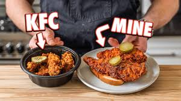

Nashville Hot Fried Chicken
Home

Ingredients
- 2-4 chicken thighs or breast
- 3 cups flour
- 3 tsp kosher salt
- 2 large eggs
- 2 cups buttermilk
- 2 tbsp hot sauce
- 2 tbsp pickle juice
- 1 cup hot oil
- 4 tbsp cayenne
- 1 tbsp garlic powder
- 1 tbsp smoked paprika
- 2 tsp kosher salt
- 2 tbsp dark brown sugar
Steps
- Start by curing the chicken with salt on both sides. Let sit in the fridge for 24 hours.
- Fill a heavy bottomed pot with oil and preheat to 325F.
- For the buttermilk dredge, whisk together beaten eggs with buttermilk, hot sauce, pickle juice, and an optional splash of cold smoked matsutake shoyu.
- For the flour dredge, combine all-purpose flour with kosher salt. Whisk together.
- For the spicy oil, mix and combine cayenne powder, garlic powder, smoked paprika, kosher salt, and dark brown sugar.
- Dunk the chicken into the flour followed by the buttermilk mixture and back into the flour mixture. Rinse and repeat with the remaining chicken.
- Drop chicken into the oil in batches for 15-18 minutes or internal temperature reaches 165F.
- Transfer to a wire rack set over a rimmed baking sheet.
- Take a cup of hot frying oil and whisk into the spice mixture.
- Once thoroughly mixed, dump in each piece of chicken and cover with spice mixture.
- Lay chicken on a slice of white bread, top with pickles and serve.